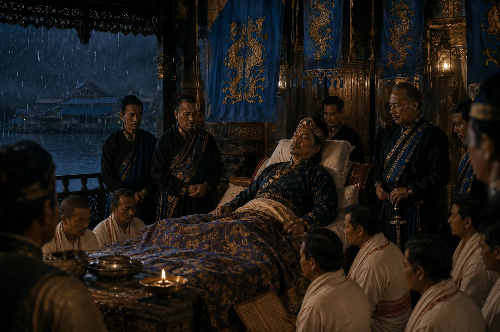

Deathbed of King Jayadhwaj Singha
November 1663 · Against the Mughal Empire

On his deathbed at Bakata, Jayadhwaj extracts a solemn oath from his successor Chakradhwaj Singha to wipe out the shame of Mughal conquest.
Sources have not yet been catalogued for this record.
People: Chakradhwaj Singha (Supangmung), Jayadhwaj Singha (Sutamla)
Open this scene in the interactive archive · Follow this event on MAP